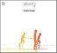
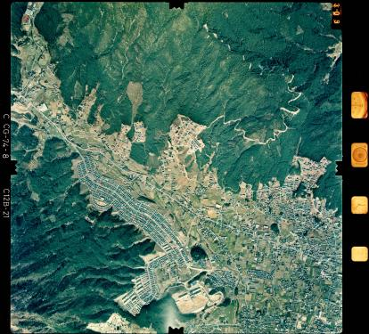

31
30
29
|
28
27
26
25
24
23
22
|
21
20
19
18
17
16
15
|
14
13
12
11
10
9
8
|
7
6
5
4
3
2
1
12/31(Wed)
-
大晦日、買物して、料理して、友人を呼んで年越し
-
食べつつ、話しつつ、気が付いたら 12 時を一時間近くまわっていた…
-
←
1/8/2004
12/30(Tue)
-
仕事納め
-
[phys]Non-Uniform
-
stress closure 論文、その２
-
tex/paper/200312-stress/stress.tex 開始、
tex notes から抜粋
-
stress.tex: 1.1 2003/12/31 04:54:06 ichiki Exp
-
[phys]blob proj
12/29(Mon)
- [job]
#39, 40, 42,
56, 62 より acknowledgement 届く
-
日本物理学会から請求書が届く
-
5/1/2003
にひどいこと書いてるけど、
どうもオランダに居た時から払ってなかったようだ…
-
丸々一年間、会費未納の会員に会誌を送ってくれていた、
暖かい物理学会ってのが、正解
-
日記には
2002 年 12 月号
までしか記述がないが、
今確認したら 2003 年 1 月号まであった
-
3 年分で 42,000 円だって…
-
←
5/6/2004
-
amazon.co.jp で散財
-
プレゼントメインの予定が、自分のものと 3 + 3 になってしまった
-
←
1/10/2004
12/28(Sun)
-
[TV]TV 三昧
- City of Angels
- Nicolas Cage と meg ryan の
- 前に見たことある、最後だけ
- Gone with the Wind
- 初めて、途中からちょこちょこと見る
- 何かこう、もう少し楽に生きようよ、と思ってしまう
(それじゃ映画にならないんだろうな)
- こういう終り方なのか、
続編を書くとかいう話があったと思うが、どうなったのかな
- the other sister
- SF が舞台
- dian keaton 演じるお母さん、居るんだよな、ああいう人
- 個人的にはいまいち
- Girl, Interrupted
- Feeling Minnesota
- keanu reeves, cameron diaz
- amazon の評価がめちゃくちゃよいのが理解できない…
Minnesota ってこういう空気なのかなぁ
- 何か中途半端な感じ
(black comedy にするならもうちょっとやりようがあるだろうに…)、
いまいち
12/27(Sat)
-
先日
壊した router の代わりを購入
- まともな machine が一台あれば、
unix で router 立ち上げた方が、
security の面でも気持よいのだが…
- 保証は (あっても多分) 1 年で、もともと $100 しないモノで、
修理代考えると買い替えた方がいいだろう、と
- 古いのだが、wireless の router と card 一枚で
$67 - $30 (rebate) に決定
- order 後、ふと rebate の expiration date が、
商品の到着に間に合わないかも、という事実に気づく
- まぁ、そのときは、しょうがない
- 1/7/2004 付記 :
購入が 1/5 まで、
rebate form は購入後 30 日以内に発送でよいので、
とりあえず $30 は戻って来るだろう
- 付記 :
1/15/2004
現在、 wavelan card は使えていない
- 付記 :
6/25/2004
router の方は R51 内蔵 wavelan で使いはじめた
- 付記 :
10/16/2007
card (dwl-650) が openSUSE on i1200 でやっと使えた。
-
←
1/5/2004,
12/27/2003,
12/24/2003,
1/25/2003
→
- 1/1/2007: 寿命が尽きた
12/26(Fri)
-
TV 三昧
-
perry mason を見て
-
memento 見て
-
matrix 見て
-
matrix reloaded 見た
12/25(Thu)
-
家で x'mas party
-
同じ apartment の日本の若い人達と、
中国の友人と、コロンビアの友人夫婦
-
予定では中国が majority になるはずだったが、
いろいろあって日本が圧倒的 majority になった
-
←
1/29/2004,
1/22/2004
12/24(Wed)
-
「集団自衛権の容認、５０年前に米要求…防衛協定交渉で」
@yahoo
(lc)
-
何でこういう見出しなんだ (やっぱ読売ってことか…)
-
１９５３年には
「日本は「（集団的自衛権の行使容認は）憲法上疑義がある」」
と言えたのになぁ
-
二人で lord of the ring 1 と 2 を見る
-
router の upgrade を失敗した
12/23(Tue)
-
moriyama 03.12.20 の
「朝日。
小柴さん激怒のニュートリノ実験計画、「逆転」で予算化
(lc)。
こういうのは「恫喝」とは言わないのだろうか。」
-
こういうのは恫喝とは言わないと、個人的には思う
-
研究者が自分のやりたいことをやらせろと主張することは、問題ないでしょう
-
問題は、たかが「ノーベル賞受賞者」にゴネられた位でビクついている方だろう
-
「総合科学技術会議」は、これまでの実績から何とかせにゃいかん、
と言ったんだよな
-
ならば「文部科学省の科学技術・学術審議会の作業部会」か?
それともそれを受けて「総合科学技術会議」が了承したのか?
-
いずれにせよ、
日本の物理の世界では業績評価なんかまともに機能しない、
ということを露呈しているだけだよな
-
科学者ってのは、
人種や肩書や年齢に関係しない価値観を共有している人達で
-
その一点のみで、普通の人達よりもまともだと思ってるんだが
-
12/22/2003
→
-
←
1/29/2004
-
「＜紙幣ばらまき＞１ドルなど９０００枚超を 名古屋ＴＶ塔から」
@yahoo
(lc)
-
「僕は悪いことをしていない。あなたにもあげる」
「若くしてカネを持つと目的意識がなくなってつまらない。
クリスマスだからまいた」
-
「中署は「交番に届け出てほしい」と呼び掛けている」、
不粋なことを
-
「同署は…どんな容疑にもあたらないと判断。
…厳重注意をしたうえ、午後８時過ぎに男性を帰した。」
-
どんな容疑にも当たらないのに、何を厳重に注意したんだろうね
-
←
1/25/2004
-
「空港で指紋検査など開始 １月５日から米安全省」
@yahoo
(lc)
12/22(Mon)
- [job]
#54 より acknowledgement 届く
-
「お茶の間に科学を――米の研究者が科学専門ケーブル局の設立を計画 Kristen Philipkoski」
@wired
(lc)
- 実はこっちで
food network
にはまって以来、
食べ物と科学と何が違うのか (同じなのか) 結構考えてた
- 食べ物 (料理) 専門チャンネル 24 時間が出来て、
科学 24 時間が出来ない訳はなかろう、と
- food network
って、要するに
料理の専門家が出て来て料理について延々とプレゼンしている、
と見ることが出来る訳で
- しかし、一番大きな違いは、食べ物は常に消費されるもので、
根源的な部分で、常に需要がある、ということ
- ミヤダイのミドルマンとは逆の発想だよな
-
11/17/2003,
10/18/2003
→
- 彼は
「何でもかんでも30秒以内にまとめてしまう」
土俵で何とかしようと言ってると思う
(し、それも分かるんだけど)
- しかし一方で、はっきりと、
30秒以内にまとまってしまうものなんか糞食らえとも思う
- 実際、テレビをつけても、ニュース番組を含めて見る気にならず、
food network
にするか、消すことが多い今日この頃
- あと、学会 (あれはそもそも 10 分なんだが) でも時々、
お前はニュースキャスターか、という喋り方をする学生さんが居たりする
- 現実には、両方のアプローチがあってはじめて機能していくんだろう
- 日本では、そもそも難しいだろうなぁ、 science channel
- だって
「ビンガム氏によると、調査した結果、
『タイム』誌や『ニューズウィーク』誌において、
最も売れた号のうちの一部は、科学の特集が組まれた号だったという。」
なんてこと、日本じゃ考えられないだろう…
- それよりも、
放送の寡占 (を皆が許容している) 状態の方が問題じゃないかな、
金太郎飴だもんな、どこの放送局も
- そんな状況で、
韓国の放送局を訴えるとか言ってたニュースを見たら、
笑うしかない
- 「ファイナルアンサー」とか叫ぶみのもんたなんて (見たことないんだが)、
regis まんまでしょ、きっと
- 「テレビを見るな、テレビを切れ」は、多分正解なんだろうな
- テレビ屋に中毒にさせられているんだろうが、
何であれ、中毒から抜け出すのは容易ではない
- 1/2/2001
→
- この間の視聴率の問題とかからちょっと思ったけど、
何で視聴者が視聴率を気にする構造
(視聴者を寄せるために視聴率を叫ぶ構造)
ができたんだろう
- あんなもの本来、テレビの営業がスポンサーに売り込む材料に過ぎないだろうに
- iPod のリスト、音楽通のを必死で追っかける馬鹿どもと、
結局同じセンスなのか
- 仮に日本で科学専門ケーブル局を作っても、
絶対にバラ色の成功は、ない
- 多分、大きな所を目指すんではなくて、
草の根的に、ぎりぎりのところで、
ぐっと踏んばって行くしかないんだろう
- それでも、やらなければならないんだろうな
- そんなことやらないという軽薄な連中しか、残ってないのかなぁ
- 雑誌よりも、意義があるんじゃないかとも思うが
-
「［挑む］研究者たちの素顔／２２ 米テキサス大教授・柳沢正史さん」
@mainichi
(lc)
-
「［挑む］研究者たちの素顔／２０ 東京大大学院理学系研究科教授・佐藤勝彦さん」
@mainichi
(lc)
-
「引退会見をする米長邦雄棋聖」
@yahoo
(lc)
の米長邦雄の写真を思い出した
-
眼鏡、白髪まじりってだけで、本当に似ているわけではないな
-
ずっと引っかかってるのは、この二人に似た誰かなんだが、誰だっけ?
-
「Movable Type を iswebに設置」
-
[phys]blob proj
-
数値 blob, その２
-
可視化の整備
-
新たに format を作ってしまった、
既存の可視化ツールを確認、
filter (blob2pos.sh) を作る
12/21(Sun)
-
「新入社員の４割「年功型がいい」…生産性本部の調査」
@yahoo
(lc)
-
単に楽したいだけだろう、
それに合わせると、一旦入ったら何もしない奴らばかりになる
-
大学と一緒、官僚と一緒
-
vtk の環境を整備しなおす
-
手元の Mesa-3.4 には
glXCreateGLXPixmapMESA
がない
-
glXCreateGLXPixmap
を使えば、とりあえずよさそう
-
mesa3d.org
見ると、今時は version 5 らしいなぁ…
-
完璧に乗り遅れているが、
使い慣れた道具がよいと思ったり
-
使いもしない付加価値の為に、無理に追い付こうとするのは、
実質的に時間の無駄
-
しかし、そうやって常に供給していかなければ、経済は回っていかないのかなぁ
-
C++ は重くていかん (というのは、貧乏人の発言)
12/20(Sat)
-
白い犬の DVD
を見る
-
本の方がよいと、つい思ってしまう
-
盛り上げの為だけの、下らんエピソード、入れないでほしいもんだ
-
日記がポイントなのになぁ、と思ったが、まぁ映像にならないか…
12/19(Fri)
-
「Googleのカネをかけない斬新なシステム構築」
@mochio
(lc)
- 引用：
余談になるが、1998年から1999年にかけて、
僕は「Googleは面白い」という話を、日本企業の研究所の人たちによくしていた。
ところが、日本の研究所の人たちの多くが、
アルゴリズム自身はうちでもちゃんと研究をしているとか、
Googleの発想には特別飛んだところはないとか、多くの検索技術の1つだとか、
そんな反応が多かった。
1999年というのはGoogleにとってのそんな時期だったのだ。
- そんな反応をしていた人間からは出て来ない、過去の状況分析
- 今の自分が、そっち側の人間にならないようにするには、さて、
どの辺に注意しておけばよいか
- 何が足らんかったのかな、奴らには
- 日和見とも違うし、
周りが全然見えていない訳でもないし、
でも上っ面しか見てなかったってことか?
- technical な部分とか、
頭で分かる部分とか、
そういう部分を越えた部分なのかな
- 実際のところ、google について、実感が湧かないんだけど
(選択眼が、やっぱないんだな)
-
引用２：
スピーカーのJim Reeseは…
歌手でギタリストでもありCDも出しており、本職は神経外科医であった。
僕はJimを直接は知らないが、
同じようなタイプのマルチタレントのアメリカ人の友人を何人か知っている。
- 僕はそもそも友達は少ないが、
同じようなタイプのマルチタレントを一人も知らない。
- 分母は、それでも圧倒的に日本人が多いんだけど、
日本の風土が影響しているんだろうか
- 例の、足を引っ張る話し
(cf.12/15/2003)
- 口出すなら文句って人が多いよな
- 大勢は黙ってる、なんだろうけど
- 逆に、珍しく他人を褒めてる人を見ると、
自動的に疑い filter (本気で言ってるのか? 皮肉か? っていうような)
が起動してしまう自分も、何か悲しいが
- 若い頃は音楽を聞いていた (本を読んでいた (研究をしていた)) が、
今は聞か (読ま (研究し)) なくなった人が、
音楽 (本 (研究)) に関して言ってることは、
ほとんどノスタルジーだろうな
- だって使わなければ何でも (特に頭は) 腐るからな
- excuse としては「忙しい」ってのがあるんだろうが、
「忙しい」の基準を、最近いろいろ疑っている
- やりたいことは全部やろう、と思う今日この頃
- 2/22/2008:
「感想文もやめます」、あるブログサイトにて。
- サマリー：忙しい人
-
「カネをかけない」つながりで、
今日頭に来た別の事
-
「Downloadable Origami Motorcycles」
@/.
(lc)
-
「新札発行、秋にずれ込み ５０００円のデザイン手間取る」
@yahoo
(lc)
-
[phys]Non-Uniform
-
ダメな不完全の再計算、その６
-
054.50 が停止、
seed1 を作り直し、再計算
-
stress closure 論文
-
tex note を現段階 (再構成後、はじめて) で印刷
-
k 大の振動を除く版を削除
-
大学のメール・ルームに、何かのあまりのご飯が山のように残ってたので、
もらって夕食にする
-
今日は一人で適当に済ませなければならなかったので、ちょうどよかった
-
で、食後に一人で DVD 2 本見る
-
m2
-
もう何か、何でもありの状況になってしまっているなぁ
(というか、流れ上仕方の無いことなんだろうけれど)
-
しかし、うむ、この結末で行くと、
最終回はもっと何でもありな状況になるな
-
必然性のないアクションに辟易
-
多分、作り手の方は、そこに思い入れがあるんだろうな、
こちらにはそこに思い入れがないんだが
-
12/17/2003,
6/6/1999
→
-
t3
-
比較的評判がよかったのだろうと思って買ったが、
1 hour ドラマでちょうどいい位の内容だった
-
こちらも、無意味なアクションが多すぎる、
壊せばいいというもんでは無かろうに
-
そういう必然で、彼がそういう役回りを全うさせられるのか、
という部分だけだった
(から、 1 hour で十分)
-
残った最後の続編モノに期待
-
奇しくも、こちらは何やら最終回が賞をとったみたいだけど
-
まぁ、内容水増ししている方と、
6 冊本を 3 本の映画に凝縮した方と、
自ずから勝敗は明らかだったかな
12/18(Thu)
-
fujimoto さんの 12/17/2003 より
alan kay のことばに、そうだよなと思う
-
調べてみたら、多少のバリエーションがあり、出典はまちまちだった
-
QuoteProject - Future
より
-
"The best way to predict the future is to create it."
-- Jason Kaufmann
-
"The best way to predict the future is to invent it."
-- Alan Kay
-
The best way to predict your future? Create it. ~ Unknown
-
"The best way to predict the future is to create it"
-- peter drucker
-
要するに「人を当てにするな」と同義だな、個人的には
-
theorems
に追加
-
←
9/5/2005,
6/23/2003
→
-
誰が最初か、なんてものは、ある意味どーでもいいことだけど
(もちろん、ある意味とっても大事だとは思うが)
-
個人的には invent it よりも create it の方が好みだな
-
人間、「自分でやる」気持がなくなったら、ダメだよな
-
その意味では、人を使う人間よりも、人に使われる人間になりたい
-
人を使う側の人間になってしまうと、絶対に腐るよ、人間が
-
これは、しかし、
「人に動かされる人間よりも、人を動かす人間になりたい」
という気持と、矛盾はしない
-
世の中、人に動かされている、人を使う人間という、
本当に困った人達が、沢山いるんではないかなぁ
-
なるほど、結論は、
人を使う側の人間を動かすような、そういう人間になりたいってことだな
-
theorems
に追加
-
在宅勤務
-
[phys]Non-Uniform
-
pseudo vector の closure, その２
-
T の closure の改訂 (あきらめ版)
-
closure-pseudo.tex: 4.3 2003/12/18 21:53:59 ichiki Exp
-
友人宅でクリスマス・パーティ
-
奥さんたちの英語などのクラスの reunion という名目で、
先生込み、旦那込み、というもの
-
国でいうと、アメリカ、日本、中国、台湾、韓国、ベトナム、ブラジル、メキシコ
-
社交的な、単なる表面的なものではあるのだけど、
皆で馬鹿なパーティ・ゲームをやって笑ったりしていると、
国同士の戦争とか阿呆らしくなる
-
台湾の人 (年取った人) に日本語で、学校では日本語で、
当時は日本だったとか言われて、返答に困ったりした
-
日本に住んだことのある中国人夫婦と日本人の会話を立ち聞き
-
「アメリカに居続けたいか」との奥さん問いに、
旦那が「それは日本人にとっては難しい問いだ」とコメントした
12/17(Wed)
12/16(Tue)
-
「イラク情勢、「かなり厳しい」＝「テロリストとの対決覚悟」−小泉首相」
@yahoo
(lc)
-
すごく恐いこと言ってると思うんだが、やばくないのでしょうか
-
「テロ」という言葉で思考停止してんのかな、
「テロ」というと何してもいいという雰囲気が生成されてんだろうな
-
「テロ」という言葉を使用禁止にすると、どうなるんだろうな
-
[phys]Non-Uniform
-
andrea と議論
-
ここのところの状況説明
-
論文の構成を協議、手持ちで二つってことに
-
が、彼が明日からオランダで、帰って来るのが元旦、
10 日にはまたオランダ
-
ということで、
その 10 日間に投稿までもっていこう、と
-
1/22/2004
付記 : 出来ない事は、言うもんではないよ
-
院生の方は、何やらうまくないらしい
- [job]
+2 (55, 56) by e-mail
-
ささやかな自分へのクリスマスプレゼント
(と言う名の衝動買い)
の品が、あっという間に amazon.com より届く
(cf.12/11/2003)
-
さっそく CD 三枚を聞く、よい、新鮮な音楽は
-

Simple Things / Zero 7
- やっぱよい
- どれも同系統で単調といえば単調なんだが、
それが好きなんだからよい
- 耳のこびり付いているせいか、sia furler がいいなぁ
- cf.8/2/2003
-
Piano Jazz / Chick Corea
- chick は、よくも悪くも、常に chick だ
- "monk's mood" にはやられた、
thelonious himself のように coltrane をつい期待してしまった
- が、やっぱり bill の "reflections in D" には負けるかな
- いずれにせよ marian は常に負けっぱなし、
そこが彼女のよいところだと思う
- というか本当にすごいよな、
だって負けるの目に見えているのに、
やっちまうところが
- そういう下らんレベルで生きてないんだろうな
- さらに特筆すべきは、bill の方は 78 年、chick は 2001 年、
その意味で marian おそるべし
- そうそう、彼女の solo の "crystal silence" はかなりよかった
(個人的には chick + gary が、やっぱり好きだけど)
- サマリー: piano jazz
-
Up All Night / John Scofield Band
- john たちへの寄付というか、「俺の金、彼らのところへ行け」というか、
そういう気分の購入
- 実際、当日の録音は手にしていないが、
その数日後のライブ音源などを既に聞きまくっているし
- しかし、当日録音していたオタク野郎どもは、公開していないんだろうか…
-
←
1/21/2004,
9/29/2003
→
12/15(Mon)
-
「＜フセイン氏拘束＞イラク統治評議会メンバーと会見 尊大な態度」
@yahoo
(lc)
-
「個人重視と武者修行が重要 国際的に活躍する研究者」
@yahoo
(lc)
-
「優秀な人材を生むにはこの３つがキーワード」
みたいな下らない「まとめ」は止めてほしいな
-
そんな呪文で「優秀な人材」が生まれるわけは絶対にない
-
「子供時代には勉強を強制されたことはなく」ってのと、
親が放っておくことは、絶対に別のことだし
-
「海外で一流の研究者に学び、評価されたことで自信がもてた」
が、何で国内じゃないのか、と問うことに意味があるんじゃないかな
-
一般に、日本人に比べて外国人は、他人を褒めることがうまい (多い) からか
-
それとも日本には「一流の研究者」が居ないのか
(そんなことも、まぁ、ないとは思うけれど)
-
少なくとも、自分で責任を持って判断している個人は、
あんまり居ないんじゃないかな
-
相撲ネタ
- [job]
#44, 49
から acknowledgement 届く
-
[phys]Non-Uniform
-
ダメな不完全の再計算、その５
-
vector の closure
-
force-torque.tex (Rev 3.4) 印刷
-
tex note の構成を大幅に変更
-
closure-symmetric.tex: 3.1 2003/12/15 21:47:20 ichiki Exp
-
closure-pseudo.tex: 4.1 2003/12/15 21:43:11 ichiki Exp
-
closure-vector.tex: 4.1 2003/12/15 21:42:31 ichiki Exp
- visc-str.tex と force-torque.tex は削除、
antisym-vec.tex は当面残しておく
12/14(Sun)
12/13(Sat)
-
休日、自宅勤務
-
[phys]Non-Uniform
-
ダメな不完全の再計算、その４
-
061.02 の停止問題
-
527 step 目の config がダメ、
作り直しても同じ、
matrix が singular?
overlap はない、
seed を変えた ensemble で再計算中
-
vector の closure
-
vector で一般化、
k でまとめ、
やっぱり高次は落さざるを得ない
⇒
「あきらめ版」というのを始める
-
V の場合
-
T, E の線形 fit であきらめ版、
図も全面改訂、
とりあえず force-torque.tex に入れておく
-
F のあきらめ版
-
図の全面改訂
-
force-torque.tex: 3.4 2003/12/14 04:32:39 ichiki Exp
-
closures の相互関係に関する妄想を膨らませておく
-
数学的にあきらめたモノが、果して、物理的に復活するや否や
12/12(Fri)
-
[phys]Non-Uniform
-
V closure, その２
-
pseudo vector の定式化をきちんと押える、
出来た、
いざ、V に適用しようと思ったら何かが違う、
よくよく見ると、V は real vector だった…
-
ってことで、
vector の定式化をきちんと押える…
12/11(Thu)
-
「光子(フォトン)を完全に停止させることに成功 AP通信」
@wired
(lc)
-
reference: M.Bajcsy, A.S.Zibrov & M.D.Lukin,
Nature 426 (2003) p.638
-
「光を完全に停止させ、次にそのまま進路に沿って前進させることに成功」
-
よく分からないな
(簡単に分かることなら、すごい研究にはならない訳だ、が)
- [job]
+2 by snail mail and +2 by online
(51-54)
-
[phys]stokes flow
-
展開の変奏、その３
-
情報蒐集 :
図書館に請求していた
Liron-Mochon が届く
-
[phys]Non-Uniform
-
V closure
-
8/15/2003
以来
-
[Fp] および
[FΦ] の k fitting の改訂
-
論文を改訂
(登録は 12/14/2003)
antisym-vec.tex: 1.14 2003/12/14 05:14:16 ichiki Exp
-
昔の知合いに 1 年半ぶりにメールしてみる
-
届くかどうか自信がなかったが、無事届いたようで、早速返事が来た
-
ふと魔が差して、amazon.com にて衝動買いをしてしまう
-
X'mas 前に free shipping で届く最後の何日ってのに、背中を押されてしまった
-
←
12/16/2003
12/10(Wed)
-
「「地球シミュレータ」を用いて精密な地震シミュレーションに成功 〜「2003年ゴードン・ベル賞」を受賞〜」
@jamstec
(lc)
――moriyama 03.12.09 より
-
なるほど地震波の再現は地球規模で正確に出来るのか。
これと地震予測は、まあ別ものなんだろうな
-
「地球表面で約2.9km」のスケールでは連続弾性体としてうまく記述できる、
ということか
-
地震は、連続体の枠組で書けるのかな、
書けるとすると「地球表面で約2.9km」よりも
ずっと細かいスケールの現象なのかな
-
特異なんだろうけど、
流体のショックみたいなもんかな
(というだけは簡単だが)
-
「裁判官６人再任「不適格」、指名諮問委が初の答申」
@yahoo
(lc)
-
自浄作用なのか、
良くなろうとする行動なのか……
どういう背景があるのだろう
-
「双子の兄が「替え玉」＝中学校でカウンセリング−大麻所持の元大学教授・熊本」
@yahoo
(lc)
-
叩いたら埃が出て来たってことか
-
叩くのは、しかし、どこかで何かケチが付いた人ばかりだよな、
簡単なところから叩くってことか
(世の中そういう奴 (叩く方) ばかりってことか)
-
皆、叩かれないように、おとなしく、静かに、言いたいことも言わずに、
暮らしているんだろうか
-
言いたいことを言える環境ってのは、どうやったら実現するんだろう
-
×付いた人間を袋叩きにする風潮は、どうやったら改まるのだろう
-
出た杭を叩く構造と、おなじなのか
(皆が同じじゃないと気に入らない、という雰囲気なのか)
-
[phys]stokes flow
-
展開の変奏、その２
-
情報蒐集
-
Liron-Mochon, J Eng Math 10 287-303 (1976)
-
Cichoki-Jones, Physica A 258 273-302 (1998)
-
Daripa-Palaniappan, Phys Fluids 13 3134-3154 (2001)
-
Blake, Math Methods Appl Sci 24 1469-1483 (2001)
-
Bhattacharya-Blawzdziewicz, J Math Phys 43 5720-5731 (2002)
-
Staben-Zinchenko-Davis, Phys Fluids 15 1711-1733 (2003)
-
[phys]Non-Uniform
-
S closure, その４
-
andrea との議論
-
S はμe が飛び抜けてることを、紆余曲折の末、納得させる
-
分割しようとしている話が、そうするとみっちりと関連しあってきて、
なかなか仕上げに入れないではないか…というジレンマ
-
思い付きだけで突き進ませようとする干渉はさておいて、
落ち着いて一つ一ついきませう
-
焦っても詮無いし、むしろ誤っていると、今まさに分かったところではないか
-
#8, #27, #37, #46 より acknowledgement 届く
-
備忘録 :
12/3/2003
はよい絵だ
-
calendar
で一覧を見ると壮観だ
-
世の中、流行り廃りが激しいが、
だからこそ続けることには大きな意義がある、
と感じる今日この頃
12/9(Tue)
-
在宅勤務
-
[phys]Non-Uniform
-
ダメな不完全の再計算、その３
-
059.40 も done,
dilute 追加は計算中、
denseも追加投入
-
S closure, その３
-
(ΩΔ + linear) 係数 closure, その２
-
図の改訂 :
visc-str.tex: 2.5 2003/12/09 23:21:02 ichiki Exp
-
振動除去 k-fit,
何か、やっぱり、よろしくない……?
-
「『ギャラクティカ』最新ミニシリーズは見どころ満載 Xeni Jardin」
@wired
(lc)
-
見逃してしまったかと思ったら、今日、昨日 (part I) の再放送と
本日 premiere の part II をやってたので、
7 時前から 11 時まで見てしまった
-
その前の stargate も何かそんな雰囲気だったんだけど、
「戦争」ってのがプンプンと鼻に付いた
-
日本のテレビも、知らない間に、「自衛官かっこいい」というような風潮に
なったりしてたら、恐いなぁ
-
と言いつつ、まあまあ楽しんだ
-
戦艦全景のワイドから飛び発つ戦闘機へのズーミングとか、
あれは完全 CG なのかなぁ
12/8(Mon)
-
「藤島親方がストーンズ大使 以前から大ファン」
@yahoo
(lc)
-
在宅勤務
-
[phys]Non-Uniform
-
ダメな不完全の再計算、その２
-
060.45 は done,
059.40 は conf を作り直して再計算、
dilute も追加計算中
-
S closure, その２
-
(ΩΔ + linear fitting)
で係数版 closure のやり直し
-
note 改訂 :
visc-str.tex: 2.4 2003/12/09 07:08:46 ichiki Exp
-
解析、
μΔ は better,
μ1 も better,
μ0 は相変わらず、
μ∇ は変、
μΩ は小さい
-
決定打にならず、雑然とした試行錯誤へ
-
k 大の振動を除いた解析、
準備完了、解析中
12/7(Sun)
-
昼夜逆転してしまった
-
京極堂のせいだ
(11/26/2003 購入)、
しかしそれも終りだ
-
午前 10 時就寝、午後 3 時起床
-
[phys]stokes flow
12/6(Sat)
-
「＜殴打事件＞優先座席に座っていた女子高生殴る 神戸・地下鉄」
@yahoo
(lc)
-
席を譲らない (譲れない) ってこと
-
席を譲ろうかと思うが気恥ずかしくて躊躇 (して結局譲れなかったり)
する、というのは、個人的によくある
-
けど、今の場合はきっと、
「携帯電話を操作」してることによる
他者の無視によって起こってるんだろうな (想像)
-
これを「傍若無人」と呼んで、
昔は (sigh...) 失礼なことであると言ってたんだと思うが…
-
「傍若無人」が standard な世の中になってるんだろうか、
かなり嫌な世の中だと思うが
-
何でも majority (今の場合は、携帯を使う人) が強い、ということか
-
ルールを作って、違反した奴は悪い、と効率化するのも問題ではないか
-
手間を掛けるべき部分を簡略化するからまずいんだと思うが
(言うは易く行うは難し)
-
ルール至上主義だから
「＜横浜市営地下鉄＞全席を優先席に 歓迎と不満の声も」
@yahoo
(lc)
の
-
「これから遠慮なく座れるのがうれしい」（６５歳、主婦）
-
「若い人でも具合の悪い時がある。そういう時はどうすればいいのか」
（１８歳、男子高生）
みたいに、変てこなことになってしまうんじゃなかろうか
-
２９歳の男性会社員の行く末が気になる
-
いや、手を上げるのは悪いんだけれど…
-
もしかしたら彼の行為 (口頭での注意) に
他の乗客が冷やか (別の無視) だったりしなかったのかな、とか邪推
-
叱り方というのは、自分もそうだが、全然 skill を持っていないし、
technical にかなり 難しい行為だと思う
-
昔の人達は、どうやってその skill を磨いて来たんだろうか
-
時間の美化 filter が効いているだけで、
昔もダメだったんだろうか
-
叱り方の下手な人間が教育者とかになったりしたら、目も当てられない
-
「親は無くとも子は育つ」し、
そういう「子」に先生の出番は本質的に無いと思う
|
|
親が無くても育つ子
|
NOT 親が無くても育つ子
|
|
良い教育者
|
育つ (much better)
|
育つ時もある
|
|
何もしない教育者
|
育つ
|
ダメ
|
|
阿呆な教育者
|
たまに育つ
|
全然ダメ
|
-
教育者の評価は、育った人間をカウントするんではなくて、
ダメにした人間をカウントした方がいいのではないかな
- 7/28/2005: 褒めること
- 2/7/2006:
怒らない指導者
- 12/9/2007:
犬のしつけ - ダメを伝えること。
-
←
2/13/2004
-
RSS を復活、
ここ
に
置くことにする
-
6/22/2001
→
-
自分でサーバを持てる人がうらやましい、
今ならいろいろおもしろいことして遊べるのに
-
yet another my blog site:
12/5(Fri)
-
昨夜から今年の初雪、初積雪
-
[phys]Non-Uniform
-
再計算 on neumann
-
ダメな不完全二つ、
dilute の不足分をまとめて
12/4(Thu)
-
「今度こそ成功？ 少額決済サービス AP通信」
@wired
(lc)
- [job]
#32
より online application が完了していないとの e-mail が届く
-
親切である
-
NS-4.8 と firebird で試みたんだがダメだったんだろう、
ということで、今回は IE でやってみる
-
自動応答の acknowledgement が届いたので、今度こそ完了しただろう
-
あと、#41, 43 からも e-mail にて acknowledgement
-
在宅勤務
-
[phys]blob proj
-
文献 (Machu et al, JFM 2001) を眺めたり
-
構想を練ったり
-
F で poly にして、
当面 iterative で
-
必要に応じて
高次化、
FMM 化、
に進むか
-
数値 blob, その１
-
F poly 定式化
-
blob.tex: 1.1 2003/12/05 04:25:41 ichiki Exp
-
実装 (NR/src/BLOB に)
-
St=0,
adaptive ODE,
ざっと見、いい感じ
-
St ≠ 0,
iterative で実装、
組んだだけ、走らせてもいない
-
blob.c: 1.1 2003/12/05 04:11:56 ichiki Exp
-
blob.h: 1.1 2003/12/05 04:12:18 ichiki Exp
-
hydro-poly.c: 1.1 2003/12/05 04:12:40 ichiki Exp
-
hydro-poly.h: 1.1 2003/12/05 04:12:55 ichiki Exp
-
test-blob.c: 1.1 2003/12/05 04:13:30 ichiki Exp
-
another kengo さんの
blog
から、
昔ニュースで見たことのある
(その時はアクセス集中してたのか、接続できなかったが)
国土情報ウェブマッピングシステム
を眺めて、ノスタルジーに浸る
-
さて、我が古里、撮影が昭和 49 年というから、
まさに私達がそこで暮らし始めて数年後、
私は小学校に上がる前年

-
中程左よりの密集地帯が出来たばかりの我が虹山団地
-
下の中央が出来たばかりの我が亀山南小、亀山中、
まだ建設中で、中学の方 (左) はまだ一棟しか建ってない
-
上方の山道の先は、かの弘法大師が立ち木を彫ったと言う本存のあった福王寺
-
何時か落雷があって
(家はちょうど向かいになるので、夜消防車が上って行くのを見てたな)
焼けた
-
――何しろ根っこが生えてて動かせないから
12/3(Wed)
- [job]
#19 より acknowledgement letter 届く、
#36 の hard-copy を発送
-
APS News より
California Physics Departments Face More Budget Cuts in an Uncertain Future
-
シュワちゃんになって困ったと笑ってばかりも言ってられない
-
UC system と CSU system が直接的な影響を受けるのだそうな
-
「記憶喪失の男性を保護 行方不明３カ月、京都で」
@yahoo
(lc)
-
[phys]Non-Uniform
-
ToDo をまとめる
-
最近の n5.l5 計算 (φ =0.04, 0.35) をサラっと見る
-
精度の悪いものを一通りチェック
-
S closure
-
ΩΔ の再検証
-
11/16/2003
に一度やってて、
その時は negative
-
手書きのノートを tex note に打ち込みながら、
検証していくと positive であった
-
visc-str.tex: 2.3 2003/12/03 21:34:38 ichiki Exp
-
trackback 遊び中
12/2(Tue)
- 在宅勤務
-
[phys]blob proj
- 12/29/2002
より引き継ぎ
- blob 関連の material を独立
- 掃除の過程で、
12/26/2002
に Maxime Nicolas の論文を見ていたことが発覚
- 結局見ただけで後が続いてない…
これでは賞
(FK.001)
をとってから注目するような軽薄な奴らと何も変わらんな
- 現実的な plan を練る
- code の準備、
現象の選定 (主に三つ)
- あとは結果が出てからだが、妄想モードで、
パラメータ依存性、
不安定性の解析を考えたり
- 11/15/2007:
復活。 plan を remind しておく。
-
[phys]stokes flow
-
12/26/2002
より引き継ぎ
-
現実的なネタを掘り出しておく、
つまりは gollub ネタ
(12/9/2002)
-
今回のポイントは徹底して抽象化、簡単化すること
-
Stokes 流れネタと命名
-
Stokes 流れネタ
-
一手目でポシャったら…
壁を入れようか
-
そしたら philippe-sascha 系になるし、
ALF ネタとかぶるな
-
それでも詰めるべき本質的な違いは、ある
-
[phys]ALF project
-
12/15/2002
より引き継ぎ
-
philippe-sascha の講演
(KE.006,
KE.007)
で stimulate された
-
で、風呂に浸かってウダウダ考えてたら、
順序をかえると根本的なひっかかりが解消しうることに気づいた (今ごろね)
-
なので、もう一度、まじめに考えよう、と
-
こうしてみると、毎年 12 月は色々と stimulate されまくっている
-
それを、うまく乗せることが出来ればいいんだけれど…
-
今日 hotmail に行くと、NS 4.8 では (javascript を activate しても)
使えなくなっていた…
-
何か、世の中、不必要なものに cost を掛けるのが当り前になっているな
-
これは、
商業主義がいかんのか、資本主義がいかんのか
-
それとも、
そういうのに乗せられる愚か者が (沢山居ることが) いかんのか
-
まいったな、firebird に移行せねばならんか…
12/1(Mon)
- [job]
+14(+1) by snail and electoric mail (#37~50 と #31 の hard-copy),
stamps 37c x 20 と合わせて計 $36.61 なり
-
[
76-
72-
70-
64-
62-
56-
54-
50-
36-
34-
31
30
29
28-
20
19-
7-
5
4
3-
1
|
0
-1
]
-
あと、久しぶりに post を見ると、郵便で
#13, 15, 18,
21, 23, 26, 28
の acknowledgement が届いていた
-
付記 : #41, 43 より acknowledgement 届く
(12/4/2004)
-
付記 : #44, 49 より acknowledgement 届く
(12/15/2004)
-
付記 : #39, 40, 42 より acknowledgement 届く
(12/29/2004)
-
付記 : #45 より acknowledgement 届く
(2/5/2004)
-
付記 : #50 より公募中止の報とどく
(2/9/2004)
-
付記 : #39 よりダメ届く
(2/13/2004)
-
付記 : #49 よりダメ届く
(3/17/2004)
-
付記 : #45 よりダメ届く
(3/30/2004)
-
付記 : #44 よりダメ届く
(4/27/2004)
-
付記 : #47 よりダメ届く
(5/17/2004)
-
付記 : #46 よりダメ届く
(6/21/2004)
-
付記 : #40 よりダメ届く
(7/6/2004)
-
Physics Today
12 月号届く
-
[phys]Non-Uniform
 先日買った内の
DVD
一本鑑賞
先日買った内の
DVD
一本鑑賞
 2003年12月
2003年12月{kind=link}
{kind=link}
{kind=link}
{kind=link}
{kind=link}
{kind=link}
{kind=link}